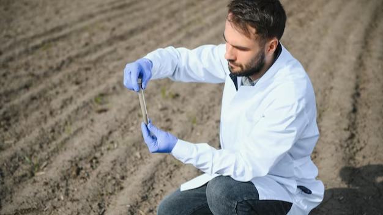

As a farmer, your ultimate goal is to get the best possible yield from your crops. To achieve that, you need to know your land, and that means understanding the soil that you're working with. Soil analysis is an essential tool that can help you gain that knowledge. It provides you with crucial information about your soil's nutrient content, texture, pH levels, and more, which can inform your decisions about what crops to plant, what fertilizers to use, and when to irrigate. By taking advantage of soil analysis, you can grow better crops, reduce waste, and optimize your resources.
Soil testing is crucial in modern agriculture for efficient fertilizer application and crop production. The absence of soil testing makes it challenging to achieve the appropriate fertilizer application for the crop and attain maximum yield. To learn more about Soil Testing and Assessment, check out Alpha Environmental.
Soil Testing is the method used to chemically extract and measure the available content of essential elements like phosphorus, potassium, calcium, magnesium, sodium, sulfur, manganese, copper and zinc from soil samples. It is a crucial diagnostic technique for identifying plant nutrient deficiencies.
The farmer is informed about the present condition of the soil on the farm and given guidance on how to enhance it:
The fertility of soil is influenced by its biological, chemical, and physical characteristics. While features like texture, structure, and color can be observed visually, the chemical makeup of soil is not easily discernible. Soil sampling is crucial because it facilitates soil diagnosis, which is necessary to determine the nutrient level and pH content of the soil.

Farmers can avoid wasting money on extra fertilizer by determining the specific soil deficiency they are dealing with, which will enable them to apply the appropriate quantity and type of fertilizers for their crops and soil.
Additionally, inorganic fertilizers contain nutrients like potassium and phosphorus that are scarce resources with finite supplies. It is crucial to use them cautiously to avoid a potential shortage of these limited resources in the future.
Over-fertilisation can occur when fertilizer is applied to soil without knowledge of the specific nutrient requirements. This can be detrimental to both the environment and crops, potentially resulting in fertilizer burn.
Farmers can avoid applying excessive amounts of fertilizers and reduce environmental damage by testing the soil beforehand and receiving informed recommendations for fertilizer use.
All of these negative environmental effects, including water pollution, nutrient leaching, and irreversible harm to aquatic life, can be avoided with a basic soil test to prevent over-fertilisation.
Unbalanced soil management causes erosion, resulting in the loss of over 24 billion tonnes of fertile soil annually, according to research estimates. In addition, approximately 1.5 billion people are directly impacted in terms of their health and livelihoods by land degradation. The process of restoring soil is both time-consuming and expensive, as well as challenging.
Consequently, opting for soil testing as a means of improving soil management proves to be a simpler approach, while the allocation of appropriate quantities of fertilizers is both cost-effective and rational.
To sum up, soil analysis plays a vital role in agriculture and farming. Understanding the physical, chemical, and biological properties of soil is crucial to growing better crops, improving productivity, and ensuring sustainability. With the help of modern technology and scientific advancements, soil analysis has become more accessible and accurate than ever before. It's essential for farmers and growers to invest in soil analysis and make informed decisions based on the results.